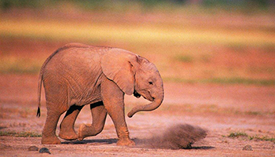

陆地动物 |
|
猎豹（学名：Acinonyx jubatus）：又称印度豹，是猫科动物的一种，也是猎豹属下唯一的物种。猎豹全身都有黑色的斑点。从嘴角到眼角有一道黑色的条纹，尾巴末端的三分之一部位有黑色的环纹；后颈部的毛比较长，好像很短的鬃毛一样，体型是纤细、腿长、头小。
栖息在温带、热带的草原、沙漠和有稀疏树木的大草原。猎豹为食肉动物，主要食物为各种羚羊，一次只捕杀一只猎物，奔跑速度极快，野外猎豹的寿命一般是15年，主要分布在非洲等地，现存3个亚种。
|
|
狮子（学名：Panthera leo；英文名：Lion）：简称狮，中国古称狻猊。是一种生存在非洲与亚洲的大型猫科动物，是现存平均体重最大的猫科动物，也是在世界上唯一一种雌雄两态的猫科动物。
狮子体型大，躯体均匀，四肢中长，趾行性。头大而圆，吻部较短，视、听、嗅觉均很发达。犬齿及裂齿极发达；上裂齿具三齿尖，下裂齿具2齿尖；臼齿较退化，齿冠直径小于外侧门齿高度。皮毛柔软。前足5趾，后足4趾；爪锋利，可伸缩。尾较发达。有“草原之王”的称号，是非洲顶级的猫科食肉动物... |
|
虎（学名：Panthera tigris ；英文名：Tiger）： 大型猫科动物；毛色浅黄或棕黄色，满有黑色横纹；头圆、耳短，耳背面黑色，中央有一白斑甚显著；四肢健壮有力；尾粗长，具黑色环纹，尾端黑色。
老虎是典型的山地林栖动物，由南方的热带雨林、常绿阔叶林，以至北方的落叶阔叶林和针阔叶混交林，都能很好的生活。在中国东北地区，也常出没于山脊、矮林灌丛和岩石较多或砾石塘等山地，以利于捕食。
|
|  |
象通称大象，是目前陆地上最大的哺乳动物，属于长鼻目，只有一科两属三种，即象科（学名：Elephantidae），非洲象属和亚洲象属。广泛分布在非洲撒哈拉沙漠以南和南亚及东南亚以至中国南部边境的热带及亚热带地区。
大象是现存世界上最大的陆地栖息群居性哺乳动物，通常以家族为单位活动。大象的皮层很厚，但皮层褶皱间的皮肤很薄，因此常用泥土浴的方式防止蚊虫叮咬。象牙是防御敌人的重要武器。
|